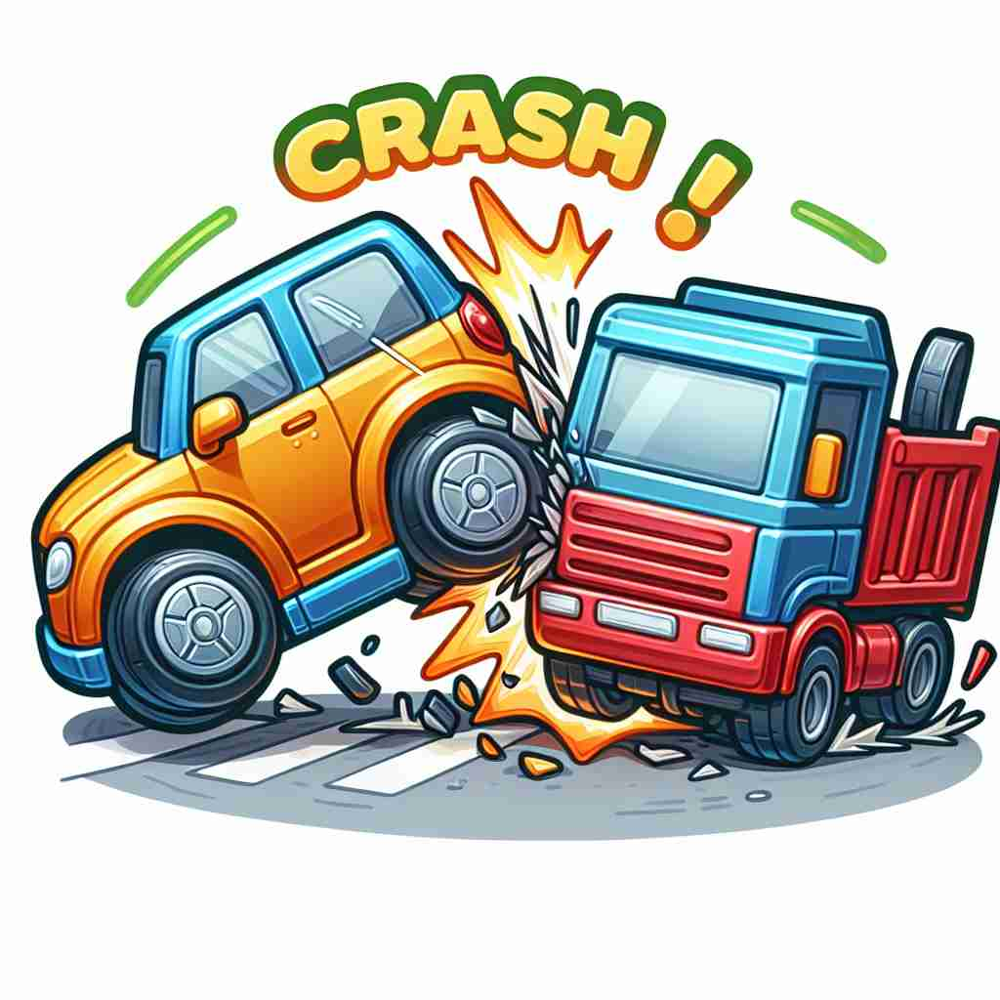

💬 The toy car will crash into the blocks and make a loud noise. 玩具车会撞上积木，发出响亮的声音。

💬 The orange car crashed into another vehicle at the intersection. 橙色汽车在十字路口撞上了另一辆车。
💬 The toy car will crash into the blocks and make a loud noise. 玩具车会撞上积木，发出响亮的声音。
💬 The orange car crashed into another vehicle at the intersection. 橙色汽车在十字路口撞上了另一辆车。
🧠 想象一辆汽车突然撞上某物的情景，这个剧烈的、突然的、伴随巨大声响的碰撞就是'crash'的核心含义。从这个核心意义出发，我们可以联想到建筑物倒塌、股市暴跌、计算机故障、派对乱入，甚至是突然睡觉等情况。这些衍生含义都保留了'突然'、'剧烈'、'意外'等特征，帮助我们更好地理解和记忆'crash'的多重用法。
🔈 [kræʃ]
🗝️ v. to collide violently with something, often making a loud noise 猛烈撞击某物，通常伴随巨大的声响。
🎭 在一个繁忙的十字路口，一辆汽车冲过红灯，与另一辆车猛烈相撞，发出巨大的声响。路人们惊恐地停下脚步，环顾四周。
💬 The car crashed into a tree. 汽车撞上了一棵树。
🌳 该词源于古法语 'crasser'，意思是发出噪声或破裂。它没有明显的词根或前后缀构成，而是直接描述了一种猛烈撞击或破裂的动作。
💡 可以联想汽车撞击的声音 '咔嚓' 来记忆 'crash'，它模拟了撞击时发出的响声，使其意义更加生动。
🗝️ v. to fall or collapse suddenly and noisily 突然且响亮地倒下或塌陷
🎭 夜晚的古老仓库，一堆杂货堆积在角落。突然，一大摞箱子失去平衡，哗啦一声倒塌在地，碎片四散飞溅。
💬 The old building crashed to the ground during the earthquake. 老建筑在地震中坍塌了。
🤔 类似物体碰撞的突然倒塌
🗝️ v. to fail suddenly and completely 突然且彻底地失败
🎭 在一个投资会议上，原本表现上佳的股票市场突然暴跌，投资者们惊慌失措地议论纷纷，显然这是一次不可预期的崩盘。
💬 The stock market crashed, wiping out billions in value. 股市崩盘，蒸发了数十亿美元的市值。
🤔 比喻性用法，如同物体碰撞般突然失败
🗝️ v. to stop working suddenly (of a computer or system) （指计算机或系统）突然停止工作
🎭 公司会议的重要时刻，投影屏幕上的电脑系统突然死机，屏幕一片蓝色，技术人员赶紧上前修复。
💬 My computer crashed while I was writing my essay. 我的电脑在我写论文时崩溃了。
🤔 比喻电脑系统突然停止工作，如同碰撞后停止运转
🗝️ v. to enter or interrupt suddenly and noisily 突然大声地进入或打断
🎭 在一个安静的课堂上，门被猛地推开，一群学生喧闹着闯入，打断了老师正在进行的讲解。
💬 He crashed the party without an invitation. 他未经邀请闯入了聚会。
🤔 如同物体碰撞般突然闯入
🗝️ v. to sleep, especially in an unplanned location 在意外的地方睡觉
🎭 深夜派对结束后，一个年轻人决定在朋友客厅的沙发上将就过夜，把外套盖在身上不一会儿便沉沉睡去。
💬 After the concert, we crashed at a friend's place. 演出结束后，我们在朋友家休息了一晚上。
🤔 非正式用法，比喻突然倒下睡觉
🗝️ n. a sudden loud noise as of something breaking or hitting another object 突然传来的一声巨响，如同某物破裂或撞击其他物体的声音。
🎭 夜空中电闪雷鸣，一道闪电击中大树，树枝断裂发出巨响，仿佛大地在颤动。
💬 We heard a loud crash coming from the kitchen. 我们听到厨房传来一声巨响。
🤔 由动词的碰撞含义衍生出的名词